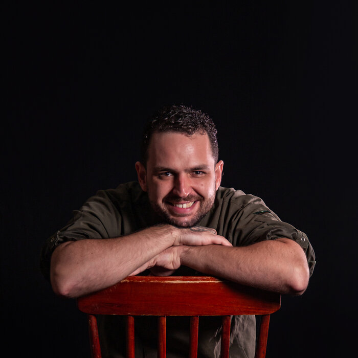

FRAN OZANNE
Chef · Consultor Gastronômico
Da raiz ao prato — técnica, tempero e leveza.
✉️
Falar comigo
Consultoria e projetos — resposta direta
📷
Instagram
@fran.ozanne
🌐
Site & Consultoria
Serviços, metodologia e cases
💼
LinkedIn
Perfil profissional